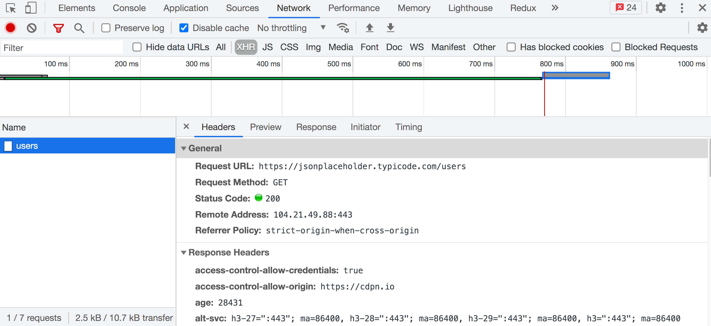

AJAX
AJAX (Asynchronous JavaScript and XML) - метод отримання або відправлення даних з подальшим оновленням інтерфейсу за цими даними, без потреби перезавантаження сторінки. Завдяки цьому зменшується час відгуку і веб-сторінка стає інтерактивнішою. Цей процес можна розібрати на прикладі завантаження даних.
- На веб-сторінці відбувається подія (сторінка завантажується, натискається кнопка «Показати більше», відправляється форма тощо).
- На клієнті, за допомогою JavaScript, реакцією на цю подію буде виконуватися функція для роботи з сервером, де створюється і відправляється HTTP-запит.
- Сервер отримує і обробляє HTTP-запит, відправляючи назад у відповіді дані у форматі JSON.
- На клієнті, за допомогою JavaScript, відповідь від сервера обробляється, зчитуються дані і оновлюється інтерфейс.
ЦІКАВО:
Незважаючи на те, що у назві технології присутній XML, в сучасному
інтернеті його замінив JSON, а назву залишили як данину пам'яті. AJAX
трактується як будь-яке спілкування з сервером без перезавантаження
сторінки.
Fetch API
Інтерфейс, вбудований в браузер, доступний на об'єкті window, який містить набір властивостей і методів для відправлення, отримання та обробки ресурсів від сервера. Метод fetch() надає сучасний інтерфейс для формування запитів до сервера і побудований на промісах.
fetch(url, options)
- url - шлях до даних на бекенді, які необхідно отримати, створити або змінити. Обов'язковий аргумент.
- options - об'єкт налаштувань запиту: метод (за замовчуванням GET), заголовки, тіло тощо. Необов'язковий аргумент.
Будемо робити запити до JSONPlaceholder API - публічного REST API для швидкого прототипування, який надає колекцію несправжніх користувачів в ресурсі /users.
fetch("https://jsonplaceholder.typicode.com/users")
.then(response => {
// Response handling
})
.then(data => {
// Data handling
})
.catch(error => {
// Error handling
});
Перевірка відповіді
Значення промісу, який повертає метод fetch(), - це об'єкт зі службовою інформацією про стан відповіді сервера. Екземпляр класу Response містить різні методи і властивості. Залежно від типу отримуваного контенту, використовуються різні методи для перетворення тіла відповіді у дані.
- json() - парсить дані в JSON-форматі.
- text() - парсить дані в простому текстовому форматі, наприклад .csv (табличні дані).
- blob() - парсить дані, що описують файл, наприклад, зображення, аудіо або відео.
У першому методі then() виконується перевірка статусу відповіді і перетворення даних у правильний формат, або явне створення помилки, щоб обробити невдалий HTTP-запит в блоці catch().
fetch("https://jsonplaceholder.typicode.com/users")
.then(response => {
if (!response.ok) {
throw new Error(response.status);
}
return response.json();
})
.then(data => {
// Data handling
})
.catch(error => {
// Error handling
});
ЦІКАВО:
Це необхідно для того, щоб fetch() правильно зреагував на статус код
404, який, технічно, не є помилкою, але для клієнта - це неуспішний
результат.
Вкладка Network
В інструментах розробника на вкладці Network відображаються всі HTTP-запити, що виконуються на сторінці. Вибравши фільтр XHR, залишаться тільки запити до бекенду. Після натискання кнопки в прикладі, через деякий час запит відобразиться у списку. Вибравши його, можна подивитися службову інформацію і тіло відповіді на підвкладках Headers, Preview і Response.
Робота з публічним REST API
Кожен бекенд унікальний, їх тисячі. З іншого боку REST API побудовані за стандартною архітектурою. Це означає, що можна зрозуміти принцип їх роботи, після чого, все що потрібно зробити - це ознайомитися з документацією того бекенду, який необхідно використовувати.
Продовжимо працювати з JSONPlaceholder API. З документації беремо URL ресурсу для запиту інформації про колекції несправжніх користувачів.
https://jsonplaceholder.typicode.com/users
Цей шлях складається з наступних частин:
- https://jsonplaceholder.typicode.com - це ендпоінт, базовий URL, точка входу в API.
- /users - ресурс, до якого ми звертаємося.
По кліку на кнопку «Fetch users» зробимо GET-запит і виведемо список користувачів за отриманими даними.
See the Pen lesson-19-fetch by goit-academy (@goit-academy) on CodePen.
ЦІКАВО:
Зверніть увагу на те, що функція fetchUsers() повертає проміс, тому до
результату її виклику ми додаємо ланцюжок методів then() і catch().
Помилка новачка
Розберемо поширену помилку при роботі з асинхронним кодом - спробу використовувати дані HTTP-запиту поза колбеком методу then(). Новачок намагається записати «результат fetch» у зовнішню змінну і використовувати її нижче у коді, відразу після виклику методу fetch().
let globalVariable; // undefined
// Initializing data fetching
fetch("https://jsonplaceholder.typicode.com/users")
.then(response => response.json())
.then(users => {
console.log("users inside then callback: ", users);
// Writing the result to a global variable
globalVariable = users;
// Everything is ok here, the data is in the variable
console.log("globalVariable inside fetch callback: ", globalVariable);
});
// No async data here
console.log("globalVariable outside fetch: ", globalVariable); // undefined
Поза колбеком методу then() даних немає, оскільки останній console.log() виконається раніше, ніж надійде відповідь від сервера. У цей час змінна globalVariable ще містить undefined. Значення промісу, що виконався, доступне тільки в колбеку методу then().
Параметри рядка запиту
Параметри запиту дозволяють вказати бекенду додаткові критерії. Наприклад, скільки елементів колекції ми хочемо отримати в запиті, можливо, необхідно додати сортування за якоюсь властивістю об'єкта, обмежити вибірку тощо. Список параметрів запиту, їх назви і можливі значення залежать від бекенду і описані в документації.
Символ ? вказує на старт параметрів запиту. Кожен параметр - це пара ім'я=значення. Символ & використовується для зазначення смислового «І», розділяючи параметри в рядку запиту.
const url = "https://jsonplaceholder.typicode.com/users?_limit=7&_sort=name";
Такий GET-запит поверне масив із семи користувачів (всього їх 10), відсортованих за ім'ям (поле name) в алфавітному порядку. Підкреслення в іменах параметрів специфічні для цього бекенду, це не якийсь стандарт.
See the Pen lesson-19-query-params by goit-academy (@goit-academy) on CodePen.
Клас URLSearchParams
Параметрів може бути багато, і незручно складати з них один довгий рядок як для читабельності, так і для його подальшого редагування. Під час складання рядків параметрів, створюється екземпляр класу URLSearchParams та ініціалізується об'єктом. Результатом буде спеціальний об'єкт (ітератор) з методами, який у рядковому перетворенні повертає результат виклику методу toString() - своє рядкове відображення.
const searchParams = new URLSearchParams({
_limit: 5,
_sort: "name",
});
console.log(searchParams.toString()); // "_limit=5&_sort=name"
const url = `https://jsonplaceholder.typicode.com/users?${searchParams}`;
console.log(url); // "https://jsonplaceholder.typicode.com/users?_limit=5&_sort=name"
У рядковому вигляді властивості об'єкта стануть параметрами та їх значеннями. Параметри будуть розділені символом &. У разі інтерполяції значення в шаблонних рядках відбувається його неявне перетворення у рядок, тому не потрібно викликати метод toString() під час складання URL. Не забувайте вказувати початок рядка запиту символом ?.
HTTP-заголовки
Клас Headers дозволяє виконувати різні дії в заголовках HTTP-запиту і відповіді. До цих дій належать діставання, налаштування, додавання і видалення заголовків.
const headers = new Headers({
"Content-Type": "application/json",
"X-Custom-Header": "custom value",
});
headers.append("Content-Type", "text/bash");
headers.append("X-Custom-Header", "custom value");
headers.has("Content-Type"); // true
headers.get("Content-Type"); // "text/bash"
headers.set("Content-Type", "application/json");
headers.delete("X-Custom-Header");
На практиці для складання заголовків запиту, як правило, використовують просто літерал об'єкта з властивостями. У такому разі методів не буде, що найчастіше і не потрібно.
const headers = {
"Content-Type": "application/json",
"X-Custom-Header": "custom value",
};
Запит з використанням заголовків буде виглядати наступним чином.
fetch("https://jsonplaceholder.typicode.com/users", {
headers: {
Accept: "application/json",
},
}).then(response => {
// ...
});
ЦІКАВО:
Сучасні браузери додають багато заголовків за замовчуванням, залежно
від операції і тіла запиту, тому немає потреби явно вказувати
стандартні заголовки.